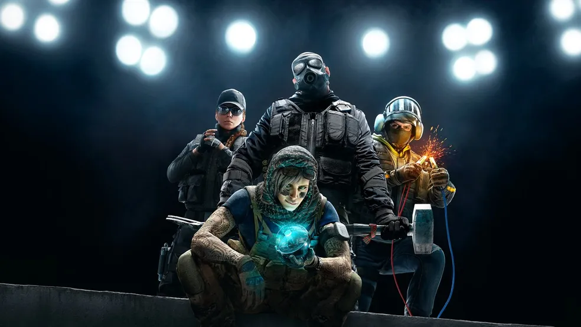

Tom Clancy's Rainbow Six Siege é um jogo de tiro tático em primeira pessoa focado em equipas e estratégia, desenvolvido pela Ubisoft Montreal. Lançado originalmente em dezembro de 2015, o jogo manteve-se altamente popular devido ao seu sistema de temporadas e forte cenário competitivo de esports.

O Tom Clancy's Rainbow Six Siege conta com dezenas de operadores divididos em duas equipas principais: Atacantes e Defensores. Eles são classificados por funções como suporte, inteligência, control do mapa, linha de frente e antientrada.
Os meus operadores favoritos são: